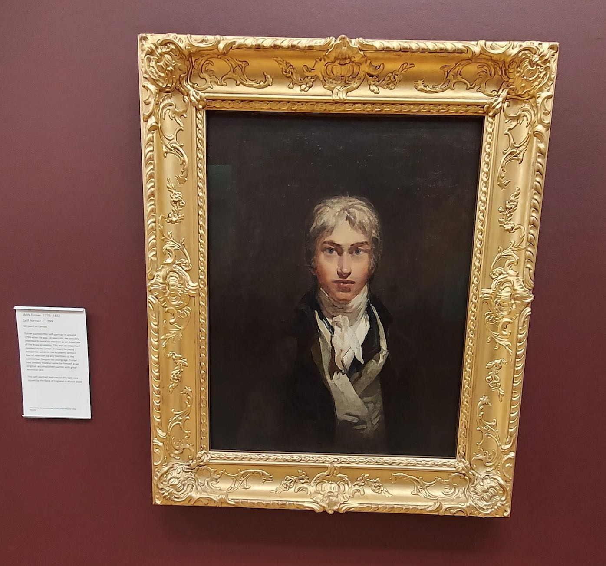
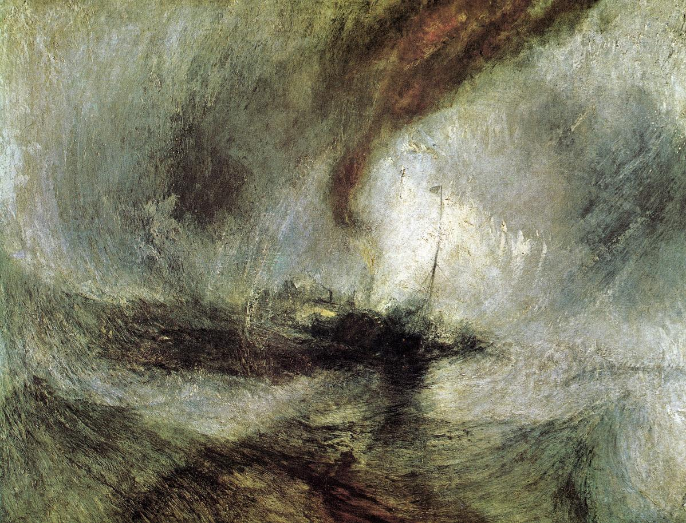
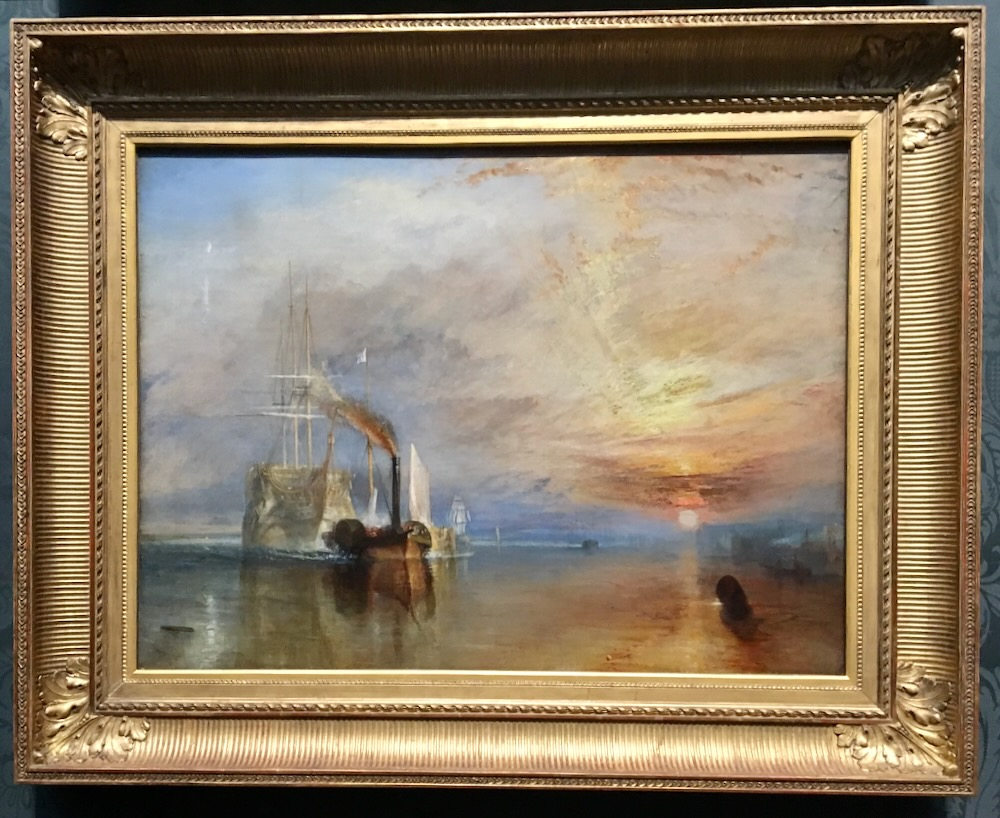

1775 年，伦敦。约瑟夫·马洛德·威廉·透纳出生在柯文园一家理发店的楼上。父亲威廉给人刮脸修面，把儿子的铅笔涂鸦压在店堂的玻璃柜台下卖给客人——这个孩子一生没有受过一天正经的学校教育，字母表还没认全，就已经在给风景上色了。母亲玛丽的精神一年比一年坏，最终被送进Bethlem疯人院，那个年代叫"疯人塔"。家里再没人谈论她。透纳后来一辈子对母亲只字不提，连一句回忆都没有留下。
一个在理发店里长大、在疯人院阴影下沉默的孩子，学会了把一切情绪都锁进画里。他十四岁进皇家美术学院，十五岁第一次展出，二十六岁成为院士——史上最年轻。他没有朋友式的师承，只有一句早期的自我命令：画画，不停地画。他的一生画了三百多幅油画、近三万张速写和水彩。别人的传记写爱情与战争，他的传记只能写产量。

他一年里有半年在路上。邮车、驿站、漕船，英国、法国、瑞士、意大利——他随身带着一个手卷速写本，站在悬崖上、趴在船板上、吊在马车顶上记天气。他看画的方式和所有人相反：别人看形，他看风从哪个方向来，光在几分几秒里改变了一整片海。评论后来说他的画是"肥皂沫和石灰水"，骂他疯了。他听完只是把帽子往下压了压，继续画。他比时代快了五十年——那些被骂融掉的画，就是一百多年后印象派睁眼看见的第一个世界。

1842 年，六十七岁的他让水手把自己绑上"精灵号"的桅杆，为的是亲眼看一场暴风雪如何吞掉一艘蒸汽船。四小时后他下来，说的是那句著名的话：他"曾让水手把自己绑上去观察"，画家们应该"亲身经历过"才能画。传说未必句句属实，但把他绑在桅杆上的那股劲儿是真的——他要的不是画风暴，他要求和风暴平等地站在一起。这大概可以追溯到那个孩子从未被允许表达的愤怒：母亲、疯人塔、沉默的家。他把一切没有说出口的东西，全部兑换成了大自然的暴力。
他名利双收，却活得像个怪人。晚年化名"布斯海军上将"，躲在切尔西一位船寡妇的家里，两间临河的屋子，天不亮就出门看日出。他抠门、粗鲁、在画展上恶意抬高自己的售价跟同行斗气；他又匿名资助落魄艺术家，死时把全部作品遗赠给国家，一分不取。他终身未娶，两个女儿是私生女，知己只有父亲——老威廉给他当了五十年的颜料研磨工、画框木匠兼经纪人，1809 年父亲去世后，据说透纳在画室里站着哭到晕倒。这是他一生唯一一次在人前崩溃。

所以看懂他的画，要先看懂他的时间感。他画的从来不是风景，是消逝。《无畏号》里那艘打赢过特拉法尔加的英雄战舰，被一艘冒着黑烟的小拖船拖着去拆解——幽灵一样的白色船体，落日和月亮同时挂在天空，一整个木制海军时代在为蒸汽时代让路。他站在岸边看着，什么都没说，画了下来。《奴隶船》更狠：1840 年他读到"泽荣号"的旧案——船东为了骗保险金，把一百三十多个生病奴隶抛进海里——他就把 Legree 的罪扔进翻卷的红色海浪里，让溺亡的手在浪沫里最后抓一下阳光。
1851 年 12 月，七十六岁，他在切尔西的小屋里咽气，最后说的是：太阳是神。他没有信徒、没有婚礼、没有学校，只有一个理发店父亲、一座疯人院里的母亲和三万张对光线的记录。今天你站在他的画前觉得"什么都没看清"——那就对了，他要的就是你没看清：世界在光里融化的时候，人和船、帝国和战舰，一起化掉。